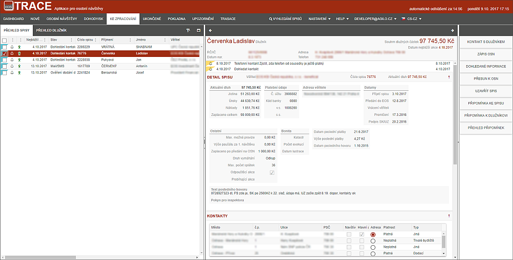

Záložka KE ZPRACOVÁNÍ
Uživatel má na této záložce všechny spisy, které mají naplánovanou jednu z následujících akcí, které je na spise nutné vyřešit:

Všechny přesuny mezi složkami jsou podloženy již popsanými procesy, které zároveň nastavují stavy a další parametry.